En su mayor parte, era la silueta negra de un murciélago. Ha aparecido en una variedad de formas con alas que cambian de forma de las formas más curiosas imaginables. Este logotipo cuenta con un pasado brillante y turbulento, ya que ha sufrido alrededor de 30 modificaciones desde su creación en 1940. El logotipo actual fue diseñado por Cathryn Laver (Calm the Ham), se inspiró en varias versiones que encontró mientras estudiaba los cómics.
1939
La primera versión del emblema de Batman (1939) fue probablemente la más minimalista: nada más que alas. Las orejas y la cabeza aparecieron más tarde. Además, el primer logotipo de Batman tenía cinco puntas de alas. El número de puntos se modificó muchas veces. En la mayoría de las versiones del emblema era el mismo que en el original, cinco. El símbolo original ocupaba poco espacio en el pecho del superhéroe, en comparación con la mayoría de las versiones siguientes.
1939-1941
El mismo año, el logo sufrió una notable modificación. Se podían ver un par de orejas afiladas y una cabeza (o, al menos, una pista). Mientras que en el emblema original los bordes de la parte superior de las alas eran redondeados, en la nueva versión se volvieron más nítidos. En la mayoría de las imágenes, había siete puntas de alas a lo largo de la parte inferior del murciélago y, sin embargo, los artistas a veces dibujaron a la criatura con solo cinco puntas, como en la versión original.
En 1940, el personaje obtuvo su título en solitario. Además, todavía se le podía ver en Detective Comics, que era conocida como la editorial de cómics más vendida en aquel entonces. La versión de 1940 del murciélago era al menos el doble de grande que el original. La cabeza ahora era mucho más prominente, mientras que la altura de las alas crecía. En algunas imágenes, el emblema presentaba detalles azules adicionales en las alas, mientras que en otras no eran visibles (probablemente se perdieron al imprimirse).
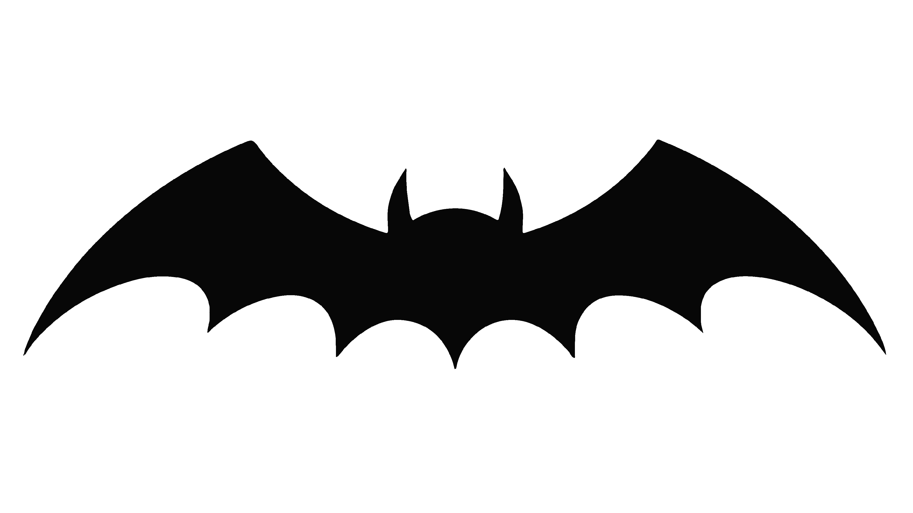
1941-1944
La versión de 1941 tenía algo gótico, con sus puntas de ala largas y afiladas. La cabeza se volvió menos visible, mientras que los ángulos en la parte superior de las alas se hicieron más agudos.
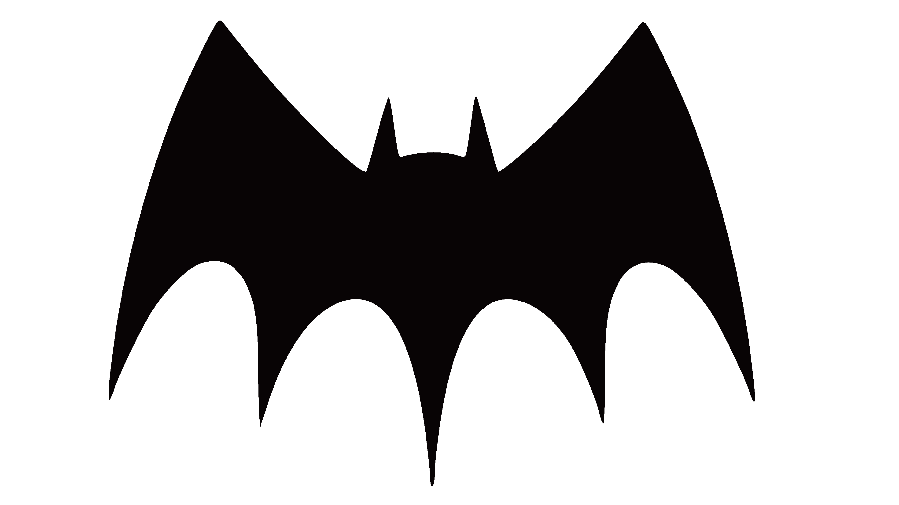
1944-1946
El número de puntas de las alas a lo largo de la parte inferior de la rata varió de cinco a nueve. El emblema era típicamente más ancho que sus predecesores, mientras que las puntas de las alas largas y exageradas a lo largo de la parte inferior y superior se hacían más cortas. La cola también se hizo más corta. Las orejas afiladas, al contrario, se hicieron aún más prominentes.
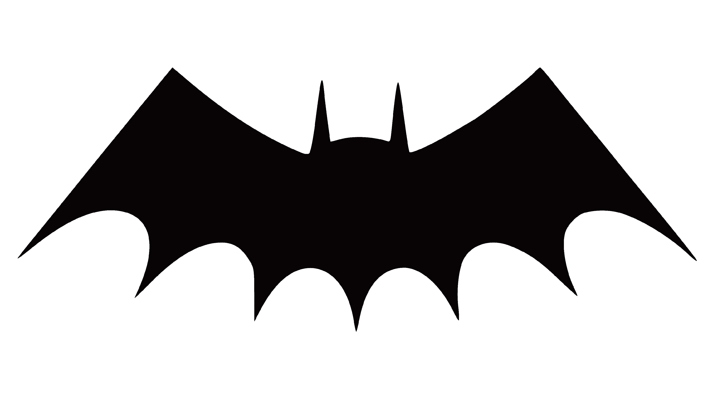
1946-1950
El logotipo de Batman de 1946 volvió al original en términos de la longitud del punto central del ala: ahora parecía mucho más largo y nítido que todos los demás puntos del ala en la parte inferior, que se volvieron un poco menos angulares. Una vez más, la cabeza se hizo más grande y más visible.
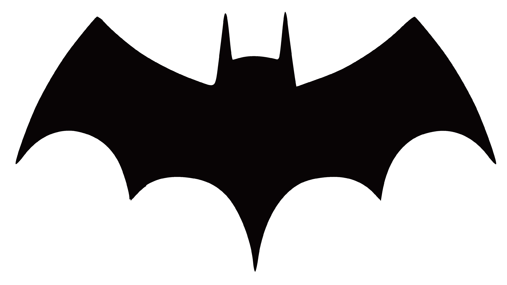
1950-1956
En los números publicados en 1947-1950, había una tendencia a hacer que la punta en la parte superior de las alas fuera cada vez más redondeada, hasta que finalmente el ángulo fue reemplazado por una curva bastante suave. Este enfoque era natural, teniendo en cuenta que el emblema en sí ocupaba cada vez más espacio en el pecho del superhéroe: la curva permitió a los diseñadores agrandar el murciélago.
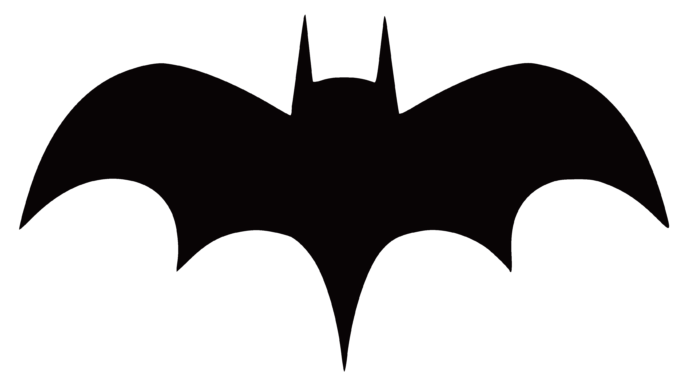
1956-1958
Sin embargo, en 1956 la curva desapareció y el logotipo de Batman se basó en una forma triangular. Para dejar suficiente espacio para respirar, los artistas tuvieron que hacer el símbolo más compacto, especialmente en términos de ancho. La versión triangular fue probablemente la más utilizada durante la década de 1950.
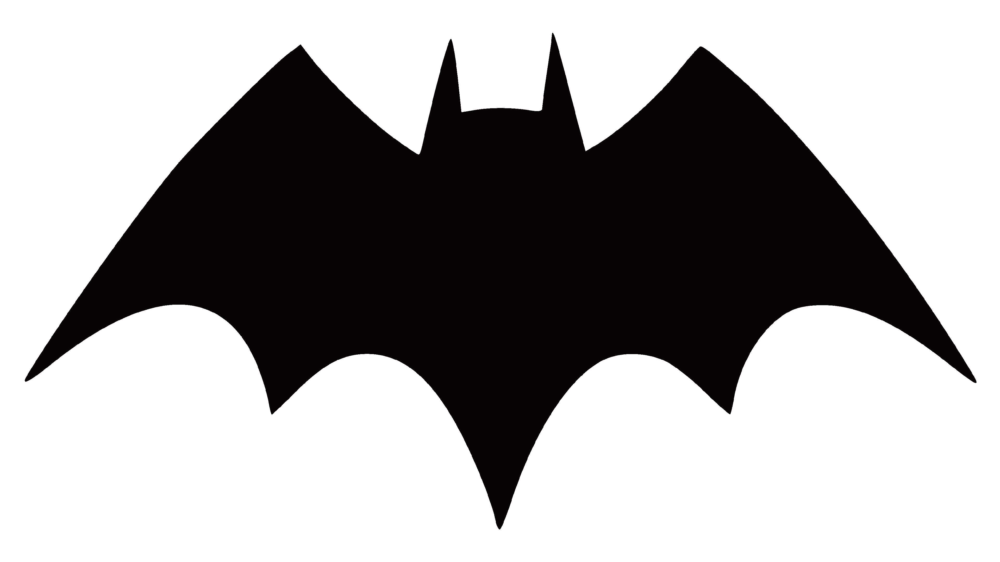
1958-1960
Con el tiempo, el emblema volvió a adelgazarse y ampliarse. En 1958, las puntas de las alas a lo largo de la parte inferior ya eran bastante largas y afiladas. La cabeza era un poco más visible que en las versiones anteriores.
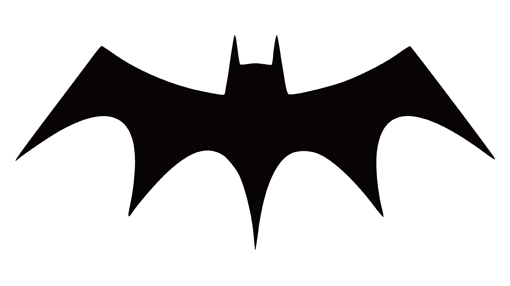
1960-1964
Mientras que en 1960 las alas eran casi las mismas que a mediados de los años 50, la cabeza seguía siendo bastante alta, como en la versión de 1958.
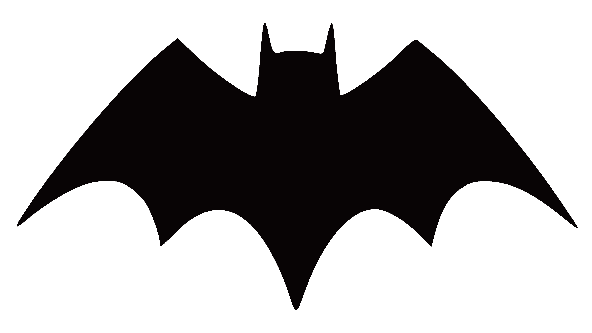
1964-1966
Probablemente la modificación más notable tuvo lugar en 1964: el emblema se colocó dentro de una elipse de color amarillo brillante con un contorno negro. Había bastantes explicaciones posibles para este hecho. Mientras que algunos fanáticos supusieron que era más fácil registrar la versión de elipse, otros afirmaron que, de hecho, el editor solo quería comenzar una nueva era en el diseño del logotipo de murciélago y, por lo tanto, necesitaba una diferencia identificable al instante con todas las versiones anteriores. Curiosamente, inicialmente, la adición de la elipse amarilla no afectó mucho la forma del emblema: solo los lados de las alas se volvieron más curvados y las puntas exteriores de las alas a derecha e izquierda se acortaron. Debido a esto, el emblema se adapta mejor a la forma ovalada.
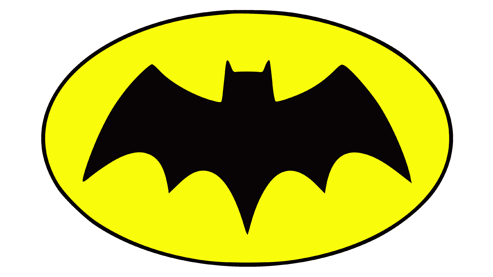
1966-2000
Sin embargo, en un par de años, el murciélago ya parecía muy diferente de su predecesor de base triangular. En 1966, por primera vez, los laterales de las alas adoptaron una curva muy marcada. Se extienden para llenar la elipse. Esta forma se repitió en el contorno de la parte superior e inferior de las alas. La cabeza y las orejas también se veían diferentes: la cabeza se hizo más prominente, mientras que los puntos más altos de las orejas ahora estaban un poco más hacia los lados.
Un paso atrás en la evolución del logotipo de Batman tuvo lugar en 1986, con el lanzamiento de “Batman: The Dark Knight Returns”. Aquí se podía ver al superhéroe usando el óvalo amarillo para atraer el fuego de los enemigos hacia su chaleco antibalas. Luego consiguió un nuevo disfraz donde el murciélago era enorme, con alas muy anchas y anchas. Su forma era muy diferente a todo lo que se había diseñado anteriormente.
En el número titulado “Batman: Año Uno” (1987), que reveló la historia de los inicios del superhéroe, fue representado con un emblema inspirado en versiones antiguas. Todavía era bastante grande, pero ocupaba menos espacio y tenía ángulos y curvas más pronunciados que la versión de 1986.
Cabe señalar, sin embargo, que en todos los números que hablan sobre el Batman actual, el óvalo amarillo seguía presente. Así lució el emblema hasta el año 2000, cuando comenzó una nueva era en la historia del símbolo del murciélago.
2000-Presente
Después de 36 años, DC Comics decidió que era hora de realizar otra importante revisión del logotipo en la historia del emblema. El óvalo amarillo desapareció, mientras que la forma de las alas se acercó más a las versiones de los años 1940 y 1950, especialmente al emblema de 1946. Sin embargo, el logotipo actualizado seguía siendo mucho más grande que el murciélago de las décadas anteriores.
Por lo general, cuando los fanáticos usan el logotipo de Batman de varias maneras (desde fondos de escritorio o pegatinas hasta incluso un patrón para un tatuaje), toman la versión 2000 como el prototipo principal.
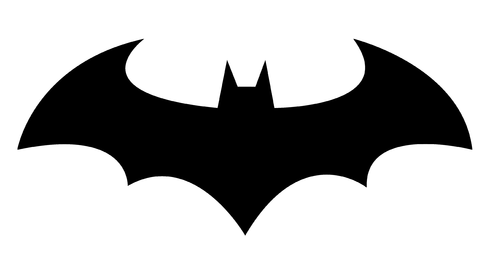
2011-2016
El diseño del murciélago de 2011 tiene una cola alargada, alas elevadas y tampoco hay "garras" en sus extremos.
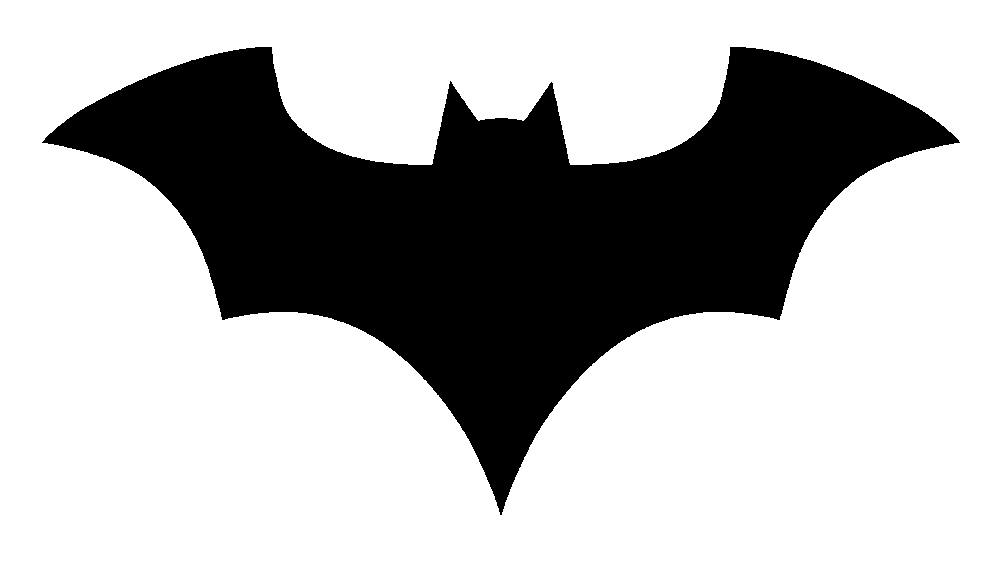
2016-2018
El emblema de 2016 es notablemente delgado y plano. Las curvas son menos intensas y hay más líneas rectas. Todo el símbolo también está delineado en naranja.
2018-Hoy
El diseño de 2018 tiene una cabeza prominente con orejas más largas, 'garras' alargadas, pero articulaciones muy cortas en la parte inferior.